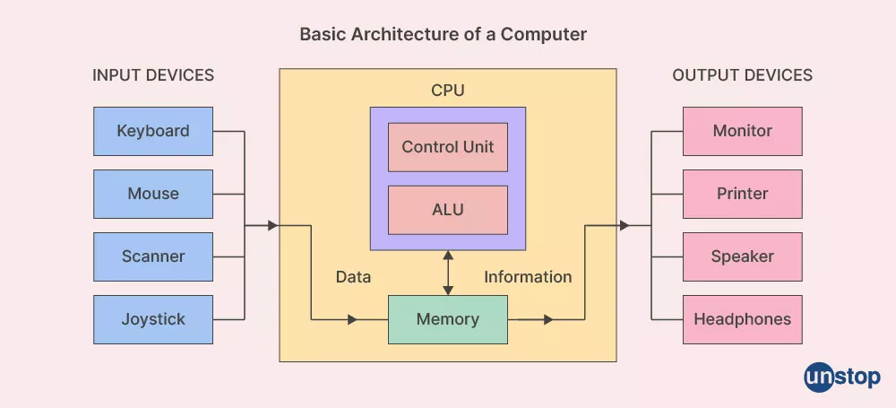

FCE subject
This subject has contents related with the basics about computers and engineering. It explains concepts related with:
Computer architecture
Networks
Operating Systems
Hardware
Software
Databases
Programming
As the basic structure of a computer that consits on input devices connected to memory and input data into the CPU and inside the ALU it returns information to output devices. Better explanation in the image below.
Which consits in the conection between two or more computers and share resources, files and comunitcates. There are 4 types of networks: LAN (Local Area Network) designed for a localized area; MAN (Metropolitan Area Network) designed for cities or small regions; WLAN (Wireless Local Area Network) designed to connect wireless; WAN (Wide Area Network) connects LANs, WLANs and MANs over large distances.
Which is a programs that actuates as an interface between user and hardware. It also controls the execution of programs and manage processes, memory, I/O and files.
The physic elements that make a computer.

The programs that order the computers to make specific tasks.
Is an organized collection of data using a database management system.
It also make an stop into programming basics especially in web programming using languages like HTML and CSS, otherwise it introduces a little bit into software development explaining how to use Git, GitHub and Virtual Studio Code